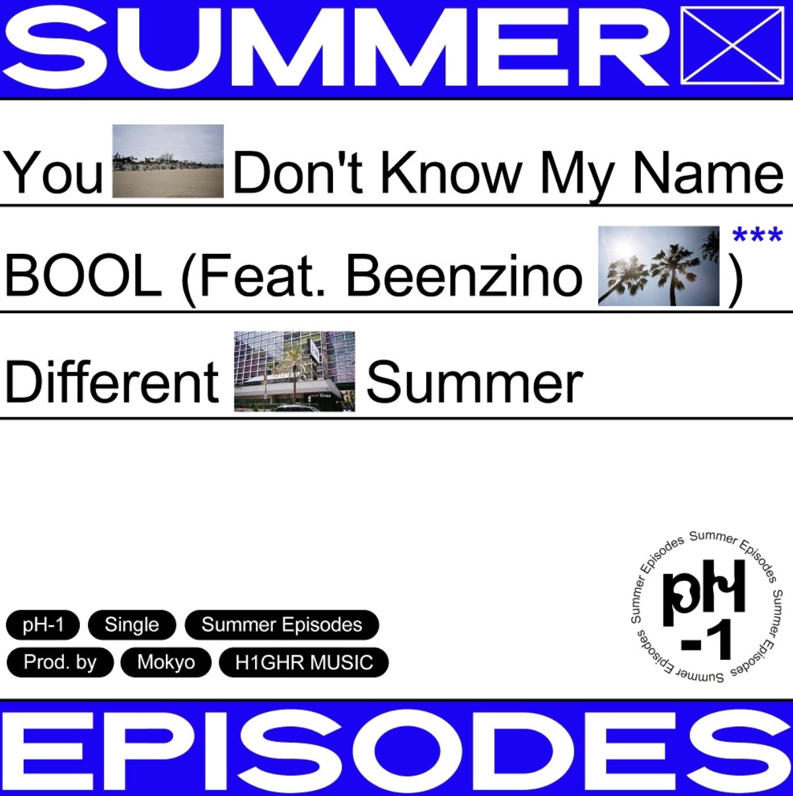
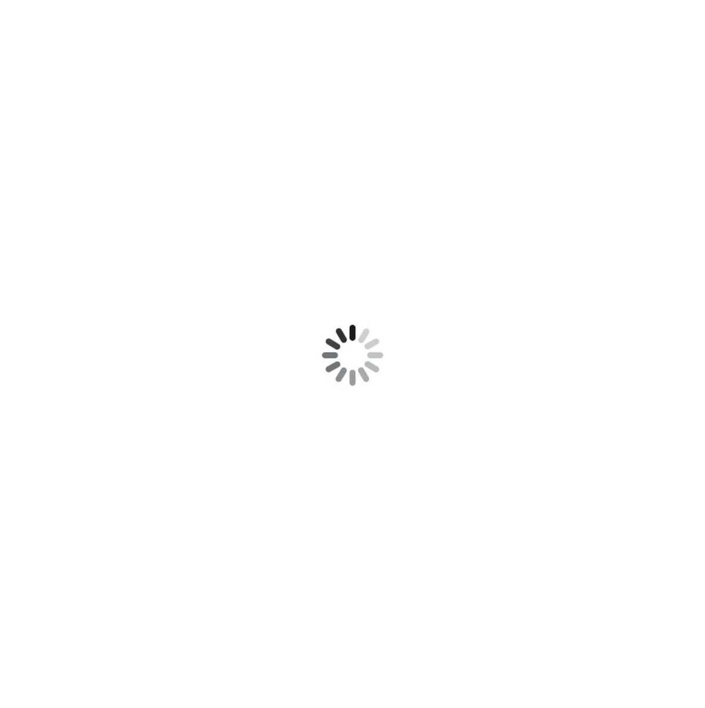
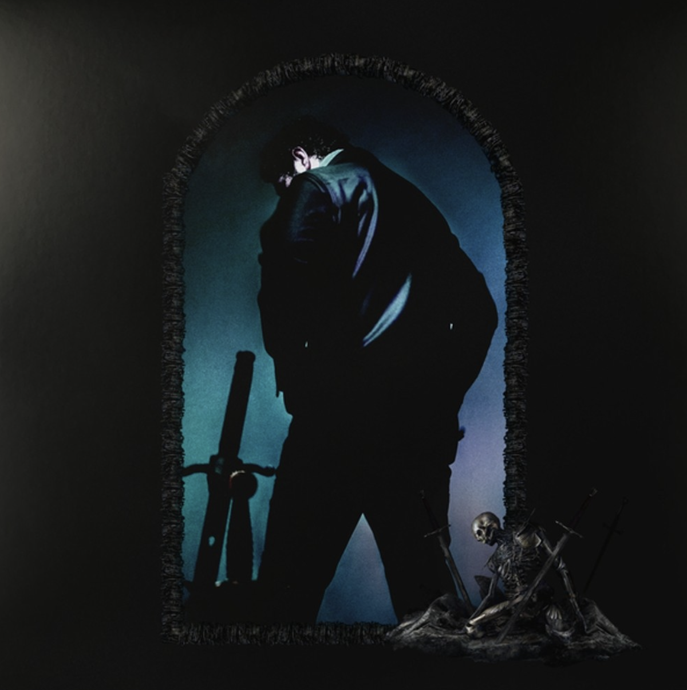
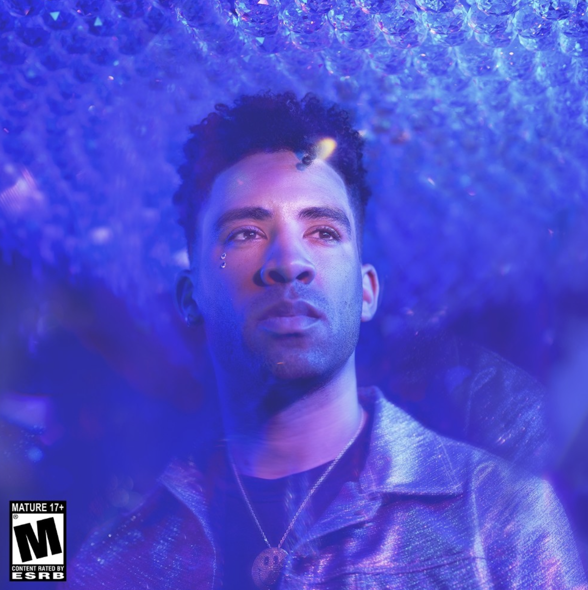
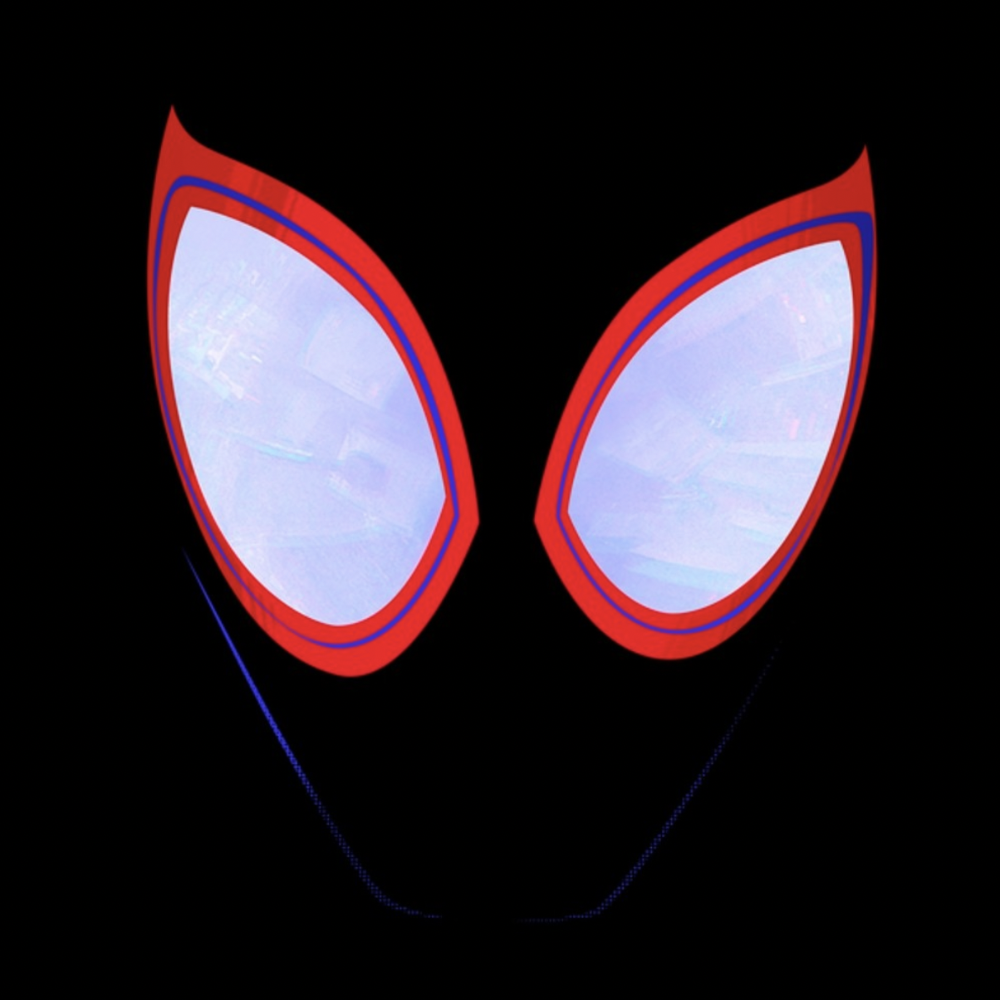

|  |  |  |  |  |
|
Different Summer (Prod.Mokyo)
pH-1 |
나타나줘 (Feat.박재범)
로꼬 |
Staring At The Sun (Feat.SZA)
Post Malone |
Babies (Feat.Alessia Cara)
KYLE |
Sunflower (Spider-Man: Into the Spider-Verse)
Post Malone, Swae Lee |
유튜브로 음악 듣기 원하는 음악의 앨범 이미지를 클릭해보세요!